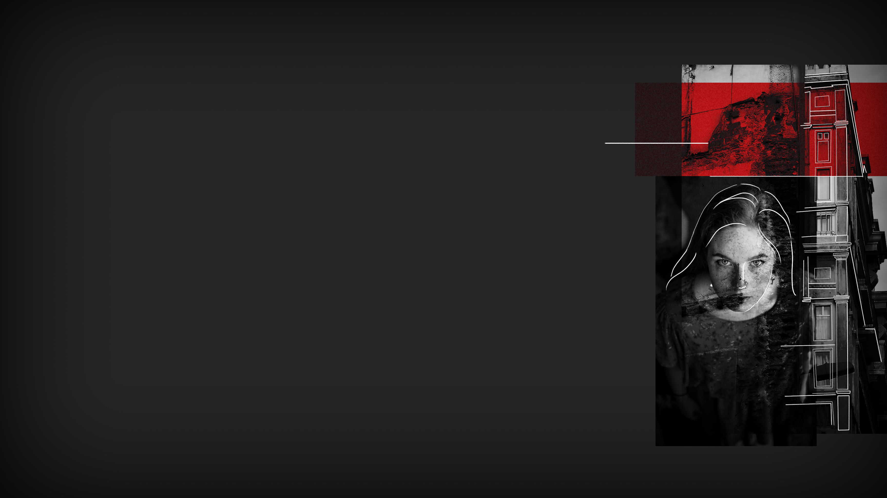

SPLITTED
SPLITTED

Every ten floors I have to stop and validate my chip at the gate, to prove I am Submitian and I have a reason for traveling across floors. On the 35th floor I reach the external gallery and cross three bridges to get to the right building.
I've been on the 87th just two times, because one of my elementary school classmates lived there and hosted me years ago to play together. Now I see a big crack on the external wall, probably caused by the earthquake: I look out the edge of the bridge and see it runs from ground zero to probably the 80th or 90th floor. DI20 is waiting for me, as he said.